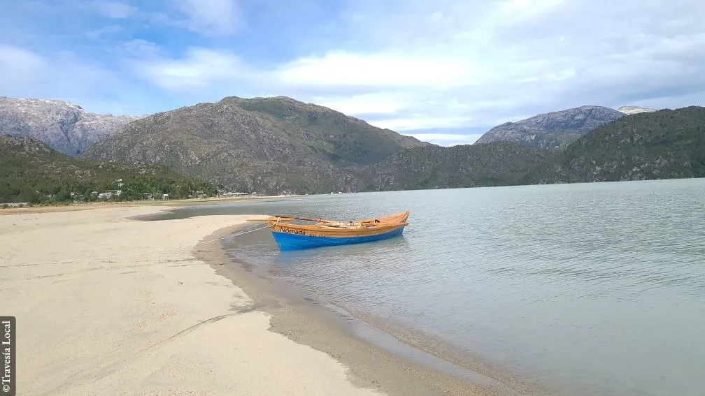

Quiénes somos

Travesía Local es una empresa de turismo creativo con base en Caleta Tortel, que ofrece experiencias auténticas inspiradas en la vida local, la naturaleza y el patrimonio.
A través de recorridos, talleres y rutas culturales, invitamos a descubrir la Patagonia desde su esencia, conectando con las personas, los oficios y los paisajes que hacen único este territorio.
En Travesía Local somos un equipo de anfitriones, navegantes y contadores de historias comprometidos con ofrecer experiencias turísticas únicas en Tortel, diseñadas desde el conocimiento profundo del territorio y el respeto por su identidad.
No solo guiamos recorridos: creamos experiencias inmersivas en Tortel que permiten comprender el territorio desde dentro. Cada travesía es diseñada cuidadosamente para ofrecer autenticidad, seguridad y una narrativa que conecta al visitante con la esencia de la Patagonia chilena.
Elegimos optar por:
Travesía Local es tu puerta de entrada a una Patagonia viva, navegable y profundamente humana.